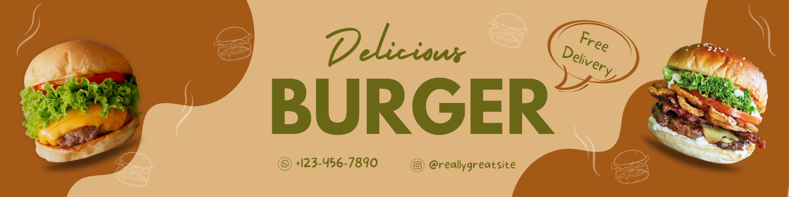

First slide Heading
First slide Caption

Second slide Heading
Second slide Caption

Third slide Heading
Third slide Caption
First slide Caption
Second slide Caption
Third slide Caption
แฮมเบอร์เกอร์ (Hamburger) ในแฮมเบอร์เกอร์หนึ่งชิ้น ประกอบไปด้วยแป้งและเนื้อสัตว์เป็นหลัก รสชาติค่อนข้างเค็ม มีแคลอรีสูง ผักน้อย หรืออาจไม่มีผักเลย การทานแฮมเบอร์เกอร์ให้มีประโยชน์ต่อร่างกาย จึงควรเพิ่มปริมาณผักเข้าไปในมื้ออาหารเพื่อเพิ่มแร่ธาตุ ใยอาหารวิตามิน และช่วยให้ระบบขับถ่ายทำงานได้ดีขึ้น หรืออาจเลือกทานแฮมเบอร์เกอร์ที่ประกอบด้วยวัตถุดิบที่มีไขมันน้อยที่สุด เช่น ทานแฮมเบอร์เกอร์ไก่ย่าง แทนไก่ทอด จะทำได้ให้ไขมันและแคลอรีต่ำกว่า
เฟรนช์ฟรายส์ (French Fries) เฟรนช์ฟรายส์ ถึงแม้จะมาจากมันฝรั่งที่มีประโยชน์ แต่เมื่อผ่านขั้นตอนการทอดน้ำมันภายใต้ความดันและอุณหภูมิที่สูงจนเป็นเฟรนช์ฟรายส์แล้ว จากประโยชน์ก็อาจกลายเป็นโทษได้ เนื่องจากมีไขมันสูง แคลอรีสูง อีกทั้งการโรยด้วยเกลือ ยังทำให้ร่างกายได้รับปริมาณโซเดียมสูงมาก การทานเฟรนช์ฟรายส์เป็นจำนวนมาก จึงส่งผลให้เกิดอาการบวมน้ำ น้ำหนักตัวเพิ่มขึ้นได้ง่าย และยังเสี่ยงต่อโรคไขมันสูง ซึ่งเป็นสาเหตุของการโรคอื่น ๆ เช่น โรคหลอดเลือดหัวใจได้